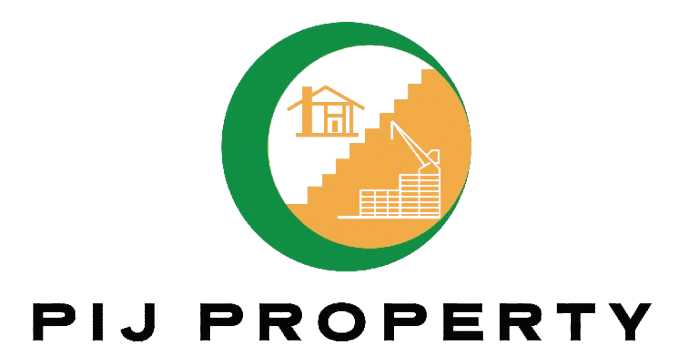

Ringkasan untuk pengurusan · 15 Oktober 2026
| Perkara | Komen / keputusan | |
|---|---|---|
| 1 | Angka utama di halaman utama: 7,862 kediaman, 100 ruang niaga, GDC RM2.16 bilion, GDV RM2.64 bilion. Adakah ini angka rasmi terkini? | |
| 2 | Foto projek: sila sediakan foto rasmi (terutama projek siap) atau sahkan gambar sedia ada boleh digunakan. | |
| 3 | Logo anak syarikat dalam carta Struktur Kumpulan: boleh dipaparkan? Dan peratusan pegangan Perisind Samudra (49% atau 45%)? | |
| 4 | Notis Privasi (PDPA): siapa pegawai/jawatan untuk dihubungi, dan penyemakan oleh penasihat undang-undang. | |
| 5 | Integriti & anti-rasuah: maklumat sijil ABMS (badan pensijilan, no. sijil, skop, tarikh sah), kelulusan teks komitmen pengurusan, dan emel saluran aduan jika ada. | |
| 6 | Emel salam@pijproperty.com: siapa 2 hingga 3 orang yang akan menerima pertanyaan pembeli? | |
| 7 | Pelancaran: tarikh sasaran dan siapa yang meluluskan selepas semakan akhir. |